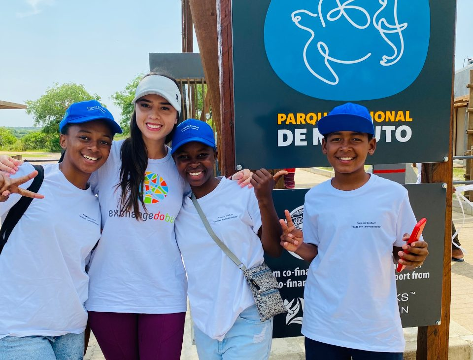
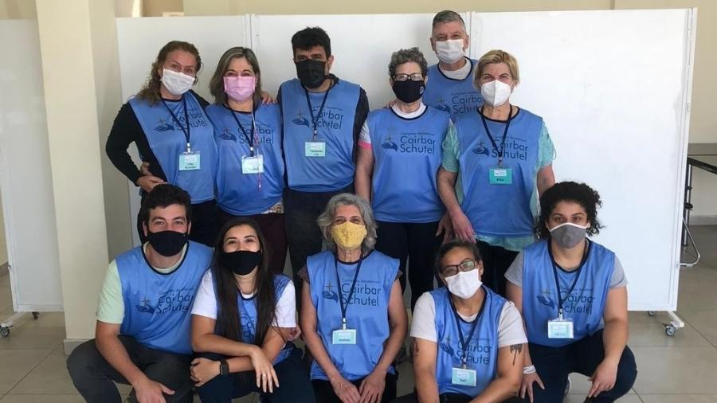

Missão
Transformar vidas por meio da educação, assistência social e oportunidades de desenvolvimento comunitário.
A ONG Esperança Solidária é uma organização sem fins lucrativos dedicada a promover a inclusão social e garantir direitos fundamentais para comunidades em situação de vulnerabilidade.
Seja Voluntário
Transformar vidas por meio da educação, assistência social e oportunidades de desenvolvimento comunitário.
Ser referência na construção de uma sociedade justa, onde todas as famílias tenham acesso a oportunidades dignas.

Confira abaixo os nossos projetos
Aulas de reforço escolar e informática básica para crianças do ensino público.
Saiba maisDistribuição diária de refeições nutritivas para pessoas em situação de rua.
Saiba maisCriação de hortas comunitárias para segurança alimentar local.
Saiba maisConsultas médicas básicas e apoio psicológico gratuito para famílias em vulnerabilidade.
Saiba maisAulas de reforço escolar e informática básica para crianças do ensino público, de segunda a sexta, no contraturno escolar. Voluntários atuam como monitores de português, matemática e informática.
Quero participarDistribuição diária de refeições nutritivas para pessoas em situação de rua. Voluntários ajudam no preparo, embalagem e entrega das marmitas.
Quero participarCriação de hortas comunitárias para segurança alimentar local. Voluntários participam do plantio, manutenção e oficinas de cultivo com os moradores.
Quero participarConsultas médicas básicas e apoio psicológico gratuito para famílias em vulnerabilidade. Voluntários da área da saúde atendem em mutirões, e outros voluntários ajudam na recepção e no agendamento.
Quero participar